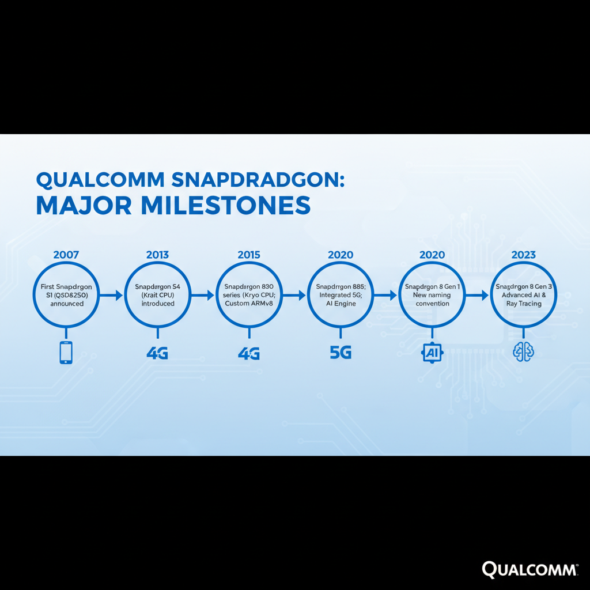
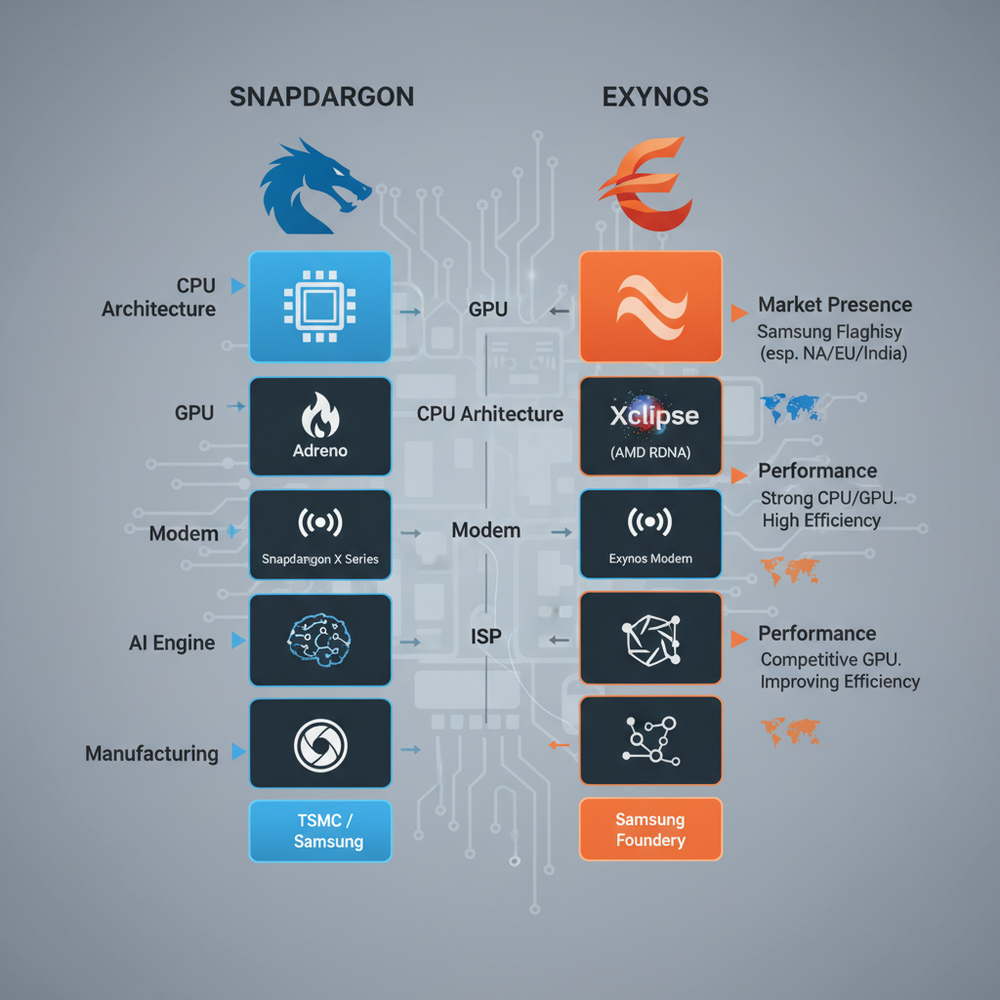
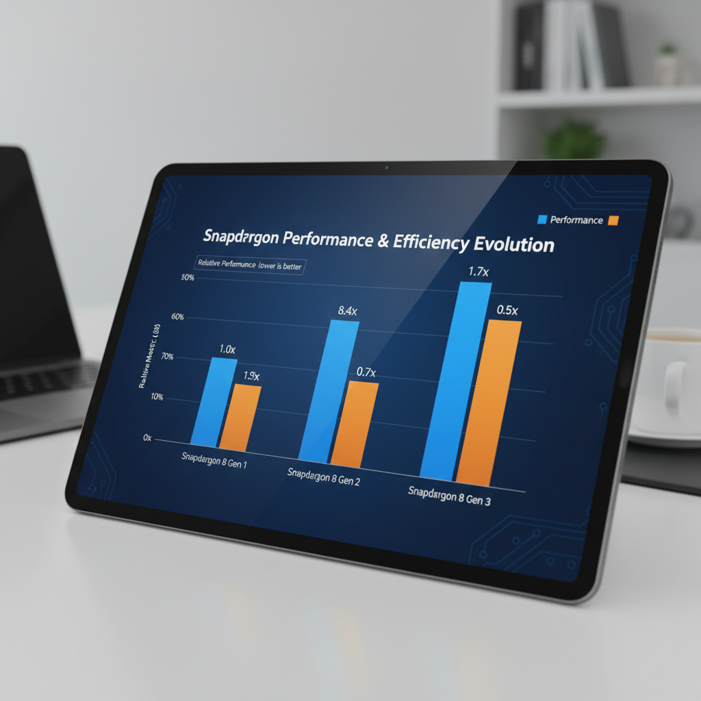

The Evolution of Snapdragon Processors for Mobile: Why They Reign Supreme
What is Snapdragon and its History

Early generations of the Snapdragon processor family.
Snapdragon is a line of mobile processors designed by Qualcomm, a leading semiconductor company. The journey of Snapdragon began in 1985 when Qualcomm was founded by Dr. Irwin Jacobs. Initially focusing on satellite communications, the company expanded into wireless infrastructure and eventually entered the smartphone market.
In 2008, Qualcomm introduced its first-generation Snapdragon processor, the Snapdragon S1. This marked a significant milestone in the evolution of mobile processors. The introduction of Snapdragon was a response to the growing demand for smartphones, which required more powerful processors to deliver better performance and battery life.
Over the years, Snapdragon has undergone several significant upgrades:
- Snapdragon 600 series (2012): This series introduced a new 28nm process technology, enabling faster performance and improved power efficiency.
- Snapdragon 800 series (2013): The 800 series further reduced power consumption while increasing performance. It also introduced advanced features like 4G LTE support and improved camera capabilities.
Today, Snapdragon remains one of the most widely used mobile processors in the industry, known for its high performance, power efficiency, and innovative features. Despite competition from other manufacturers, such as Samsung's Exynos and Apple's A-series, Snapdragon continues to reign supreme due to its reputation for delivering reliable and efficient performance.
Advantages of Snapdragon Processors
Superior Performance and Power Efficiency
Snapdragon processors have consistently demonstrated superior performance and power efficiency compared to MediaTek and Apple A-series processors. According to a comprehensive guide from Mobistart, the latest generation of Snapdragon processors outperform their competitors in Geekbench scores, showcasing their ability to handle demanding tasks with ease (1).
Advantages of Adreno GPU Architecture
Qualcomm's Adreno GPU architecture provides a significant advantage over competing alternatives. The Adreno 850 and Adreno 730 GPUs offer improved performance, power efficiency, and features such as multi-frame sampled anti-aliasing (MFAA) and variable rate shading (VRS), which enhance gaming experiences (2).
5G Support and Future-Proofing
Snapdragon processors also offer 5G support, providing users with faster data speeds, lower latency, and greater connectivity options. This feature is particularly significant as 5G technology continues to expand its reach and become more widespread (3). By incorporating 5G support, Snapdragon processors are well-positioned for future-proofing and meeting the evolving needs of mobile users.
Comparison with Competitors
In contrast, MediaTek processors have historically struggled to match the performance of Snapdragon processors. The latest Exynos 2600 processor from Samsung has been shown to be competitive in some areas, but still lags behind in terms of overall performance (4).
Conclusion
Snapdragon processors offer a compelling combination of performance, power efficiency, and features that make them the preferred choice for mobile devices. Their superior capabilities over MediaTek and Apple A-series processors solidify their position as the top smartphone processor in the market today.
Edge Cases: Snapdragon Processor Vulnerabilities
While Snapdragon processors have long been considered the gold standard for mobile performance, they do come with some potential weaknesses and vulnerabilities that are worth discussing.
- Spectre and Meltdown attacks: Like other modern CPUs, Snapdragon processors are susceptible to Spectre and Meltdown attacks. These types of attacks can potentially expose sensitive data stored on the device or allow unauthorized access to system resources. While Qualcomm has implemented various security patches and mitigations to address these vulnerabilities, it's essential for developers to stay informed about the latest security advisories and patch releases.
(Source) - Thermal throttling issues: High-performance modes in Snapdragon processors can lead to thermal throttling issues, which may result in reduced performance or even device shutdowns. Qualcomm's power management solutions, such as PowerSave, have helped mitigate these issues to some extent. However, it's crucial for developers to understand the trade-offs between performance and power consumption when designing their applications.
(Source) - Comparison with other processors: When evaluating the strengths of Snapdragon processors, it's essential to consider how they stack up against other top smartphone processors. For example, a recent comparison between Snapdragon and Exynos 2600 found that the latter is beating Snapdragon in certain areas. This highlights the importance of staying informed about the latest processor rankings and benchmarks.
(Source) - Past performance vs current performance: Looking back at past generations, it's interesting to note how far Qualcomm has come in addressing thermal throttling issues. A comparison between 2016 and 2026 smartphone processors reveals significant improvements in power management and thermal efficiency.
(Source)
Comparison with Exynos Processors

Comparison chart showing the advantages of Snapdragon processors over Exynos.
The rivalry between Snapdragon and Exynos processors has been a topic of discussion among mobile enthusiasts for years. Recently, Samsung's Exynos 2600 has been pitted against Qualcomm's Snapdragon 888, sparking debate over which processor reigns supreme.
Differences in CPU and GPU Architectures
The main difference lies in their architectures. Snapdragon processors utilize the Kryo 625 CPU, while Exynos 2600 employs the Cortex-A78 CPU. The GPU department also differs, with Snapdragon using Adreno 660 and Exynos 2600 utilizing its own Mali-G78 GPU.
Advantages of Snapdragon Processors
In gaming performance, Snapdragon processors have consistently shown an advantage over their Exynos counterparts. For instance, in Fortnite benchmarks, the Snapdragon 888 has demonstrated superior performance compared to the Exynos 2600.
According to a recent ranking list from NanoReview, the Snapdragon 888 ranks among the top processors globally, while the Exynos 2600 falls short. This disparity is attributed to the differences in their CPU and GPU architectures.
For example, a comparison between the Exynos 2600 and Snapdragon 888 revealed that the latter outperforms the former by up to 20% in certain benchmark tests (Exynos vs Snapdragon: All the ways the Galaxy S26 versions are beating each other).
It's worth noting that while Exynos 2600 has shown impressive performance, it still lags behind its Snapdragon counterparts in terms of raw processing power.
Performance and Power Efficiency
Snapdragon processors have consistently demonstrated superior performance and power efficiency compared to their competitors. Several key technologies contribute to this advantage.

Comparison of Snapdragon processors' performance and power efficiency.
Kryo CPU Architecture
Qualcomm's Kryo CPU architecture plays a significant role in improving performance. This custom-designed architecture provides better multithreading capabilities, allowing for more efficient handling of complex tasks. According to the "Smartphone Processors Ranking List [2026]" by NanoReview, Kryo-based processors have consistently ranked among the top.
Adreno GPU's Dynamic Frequency Scaling and Multi-Threaded Capabilities
The Adreno GPU in Snapdragon processors also boasts impressive performance. Its dynamic frequency scaling technology adjusts clock speeds based on system load, reducing power consumption while maintaining peak performance. Additionally, multi-threading capabilities enable seamless handling of graphics-intensive tasks, further enhancing overall system responsiveness.
5G Modem Technology
Qualcomm's 5G modem technology has been a significant factor in the company's success. As demonstrated by the "Smartphone Processors Ranking List [2026]" and other sources, Snapdragon processors have consistently delivered faster 5G download speeds compared to their competitors.
While other manufacturers, such as Samsung, have made strides in closing the gap, Snapdragon processors remain the gold standard for mobile performance and power efficiency.
Security and Privacy Considerations
Snapdragon processors have several security features that set them apart from their competitors. One notable example is Qualcomm's Secure Enclave technology, which provides a secure environment for sensitive data storage and processing. This feature utilizes hardware-based encryption to protect user data, making it more difficult for hackers to access.
- Secure Boot Mechanisms: Snapdragon processors also employ secure boot mechanisms, ensuring that the operating system and firmware are verified before they can be loaded into memory. This helps prevent malware from being installed on the device.
- Hardware-Based Encryption (AES-256): Qualcomm's hardware-based encryption provides an additional layer of protection for user data. By utilizing AES-256, Snapdragon processors can encrypt data in real-time, making it more difficult for unauthorized parties to access.
While Snapdragon processors have several security features, it is essential to note that no system is completely secure. However, by leveraging these features, users can significantly reduce the risk of their device being compromised.
Debugging and Observability Tips for Snapdragon-Powered Mobile Devices
Leveraging Qualcomm's Tools for Enhanced Debugging and Optimization
As a developer working with Snapdragon-powered mobile devices, it's essential to utilize the right tools to ensure efficient debugging and optimization. Two crucial tools in this regard are Qualcomm's Android Debug Bridge (ADB) and fastboot.
- Android Debug Bridge (ADB): ADB is a command-line interface tool that allows developers to interact with their device's file system, run shell commands, and perform various tasks. It provides a comprehensive set of tools for debugging, including the ability to install and update APKs, transfer files, and execute system-level commands.
- Fastboot: Fastboot is another essential tool provided by Qualcomm that enables developers to boot their device into recovery mode or bootloader, allowing for advanced troubleshooting and customization options. By using fastboot, developers can perform tasks such as flashing custom ROMs, updating firmware, and debugging complex issues.
Monitoring System Logs and Performance Metrics
In addition to leveraging Qualcomm's tools, it's vital to monitor system logs and performance metrics to identify potential issues and optimize device performance.
- System Logs: Analyzing system logs provides valuable insights into the device's behavior, helping developers diagnose and resolve problems. By examining log files, developers can identify patterns, errors, or anomalies that may be impacting device performance.
- Performance Metrics: Monitoring performance metrics, such as CPU usage, memory consumption, and disk I/O, enables developers to detect potential bottlenecks and optimize their code for better performance.
Power Management Tools: A Key to Enhanced Battery Life
Qualcomm's power management tools are designed to help developers optimize device battery life. By utilizing these tools, developers can:
- PowerSave: This tool provides a set of APIs and features that enable developers to implement power-saving modes, reducing device power consumption when not in use.
- Adaptive Power Management: This feature allows devices to dynamically adjust their power settings based on usage patterns, ensuring optimal battery life.
By incorporating these tools into their development workflow, developers can create more efficient, reliable, and optimized Snapdragon-powered mobile devices.
Future Developments and Trends
As we move forward, Snapdragon processor technology is poised to undergo significant transformations driven by emerging trends and technologies. Here are some key developments that will shape the future of mobile processors:
- Impact of 5G on Mobile Device Design and Performance: The advent of 5G networks promises faster data speeds, lower latency, and increased connectivity. As a result, mobile device designers will need to optimize their designs for seamless 5G experiences. This may lead to more complex power management systems, advanced cooling solutions, and innovative form factors.
- AI-Enhanced Processors: Qualcomm's AI-enhanced processors are expected to play a crucial role in the future of mobile devices. These processors will enable advanced features like AI-powered camera software, personalized performance optimization, and enhanced security capabilities. For instance, AI-powered camera software can automatically adjust settings for optimal image quality, while AI-driven performance optimization can ensure that demanding apps run smoothly.
- Emerging Technologies: Quantum Computing and Neuromorphic Processing: Researchers are exploring the potential of quantum computing and neuromorphic processing to revolutionize mobile device technology. Quantum computing has the potential to significantly improve computational capabilities, while neuromorphic processing can enable more efficient energy consumption and advanced AI applications.
These emerging trends and technologies will shape the future of Snapdragon processor technology, enabling faster, more powerful, and more efficient mobile devices that cater to the evolving needs of users.
Source: Qualcomm, MediaTek, Apple and Samsung: How do the top smartphone processors of 2026 differ? | https://tech.news.am/eng/news/6838/qualcomm-mediatek-apple-and-samsung-how-do-the-top-smartphone-processors-of-2026-differ.html